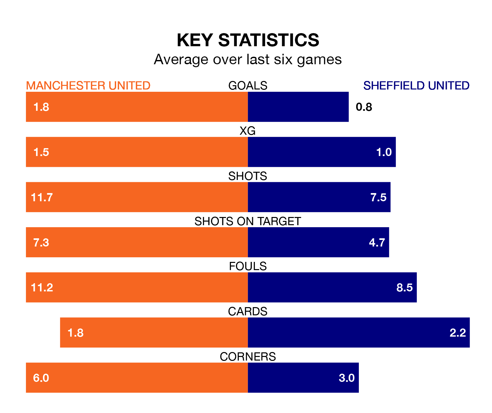

Manchester United are heavy favourites to keep all three points at home in Friday's late kick-off against Sheffield United.
The Red Devils, who sit sixth in the Premier League with 28 games played, are priced at 1.3 to seal victory at Old Trafford.
Sitting 14 places and 33 points behind them in the table, Sheffield United are 8.0 to win with *Betting Company*, while the draw is at 5.5.
In André Onana, Manchester United can rely on one of the league's safest pair of hands. He has kept eight clean sheets in his 28 appearances this season, and only one other 'keeper – Arsenal's David Raya – has been able to prevent the opposition scoring on more occasions in the Premier League.
In Sheffield United's net, Wes Foderingham has one clean sheet in 25 games. He has conceded a goal every 39 minutes, 90% more often than the 74 minutes between goals for Onana Onana.
In the last 10 years, Manchester United and Sheffield United have played each other on six occasions. Manchester United won four of them, Sheffield United one, and they drew once.
On average, the Red Devils scored 2.2 goals and the Blades 1.3 in those matches.
Their last meeting was on October 21, when Manchester United won 2-1 away.
The Red Devils are in reasonable form in the Premier League, with four wins and two losses from their last six games.
With a win and a draw over that period, the Blades's form is much worse – they have taken four points from 18, compared to the home team's 12.
With 24 goals in 28 games so far this season, the visitors are the league's lowest scorers with 0.9 goals per game. And they are conceding more than average, letting in 74 goals at a rate of 2.6 per game.
Manchester United are also below average scorers, with 1.4 goals per game, compared to a league average of 1.6. They have also conceded 1.4 goals per game.
Manchester United's last match was on Saturday, a 2-0 win against Everton, with Bruno Fernandes and Marcus Rashford getting the goals for the Red Devils.
Sheffield United drew 2-2 with AFC Bournemouth last time out, also on Saturday, with Gustavo Hamer and Jack Robinson on the scoresheet.
Updated: 15:10 (UTC), 15/03/24